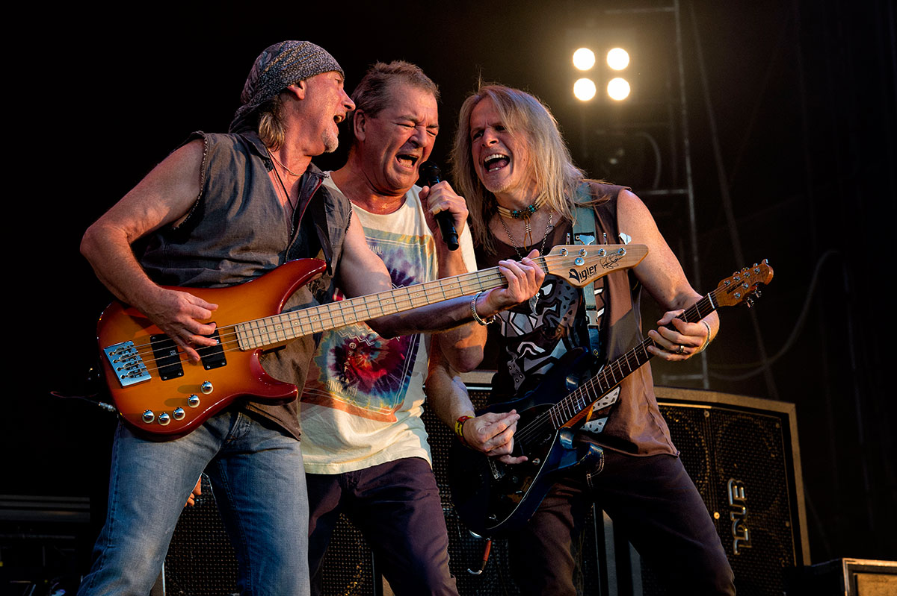

.png)
Deep Purple
Информация
• Дата образования: 1970
• Участники:
• Фредди Меркьюри
• Брайан Мэй
• Роджер Тейлор
• Джон Дикон
Навигация
Deep Purple — легендарная британская рок-группа, образованная в Лондоне в 1968 году. Считаются одними из пионеров хард-рока и хеви-метала, группа прославилась такими классическими треками, как "Smoke on the Water", "Highway Star" и "Child in Time". Альбомы "Deep Purple in Rock" (1970) и "Machine Head" (1972) считаются одними из лучших в истории рока. Группа известна своими мощными живыми выступлениями и виртуозным мастерством музыкантов. Несмотря на многочисленные изменения в составе, Deep Purple продолжает активно выступать и записывать новую музыку, сохраняя свой уникальный звук. Их вклад в развитие рок-музыки остаётся значительным, вдохновляя поколения музыкантов и поклонников по всему миру.
Deep Purple (1969)
 Дебютный альбом Deep Purple представил миру смесь психоделического рока и прогрессивных элементов.
Записанный в студии De Lane Lea, альбом включает такие треки, как "Hush" и "Mandrake Root", которые
продемонстрировали раннее звучание группы. Deep Purple отличался экспериментальным подходом, сочетающим
тяжёлые гитарные рифы с мелодичными партиями клавиш и харизматичным вокалом Роджера Гловера. Обложка
альбома выполнена в ярком и красочном стиле, отражая дух времени и творческую энергию музыкантов.
Альбом получил смешанные отзывы критиков, но быстро завоевал внимание поклонников рока благодаря своему
уникальному звучанию и инновационным музыкальным решениям. Deep Purple стал основой для дальнейшего
развития группы, закладывая фундамент для их будущих хитов и музыкальных экспериментов.
Дебютный альбом Deep Purple представил миру смесь психоделического рока и прогрессивных элементов.
Записанный в студии De Lane Lea, альбом включает такие треки, как "Hush" и "Mandrake Root", которые
продемонстрировали раннее звучание группы. Deep Purple отличался экспериментальным подходом, сочетающим
тяжёлые гитарные рифы с мелодичными партиями клавиш и харизматичным вокалом Роджера Гловера. Обложка
альбома выполнена в ярком и красочном стиле, отражая дух времени и творческую энергию музыкантов.
Альбом получил смешанные отзывы критиков, но быстро завоевал внимание поклонников рока благодаря своему
уникальному звучанию и инновационным музыкальным решениям. Deep Purple стал основой для дальнейшего
развития группы, закладывая фундамент для их будущих хитов и музыкальных экспериментов.
Machine Head (1972)
 Machine Head — один из самых известных альбомов Deep Purple, записанный в студии Montreux под
руководством Ричи Блэкмора. Альбом включает такие хиты, как "Smoke on the Water" и "Highway Star",
ставшие гимнами хард-рока. Machine Head демонстрирует виртуозное мастерство гитариста Ричи Блэкмора
и мощные вокалы Роджера Гловера, создавая динамичное и агрессивное звучание.
Обложка альбома изображает огненный фонтан над водой, символизируя пожар на казино в Монте-Реале,
который вдохновил название песни "Smoke on the Water". Альбом получил высокие оценки критиков и
стал коммерчески успешным, достигнув платиновых продаж по всему миру. Machine Head считается одним
из лучших альбомов Deep Purple и одним из ключевых релизов в истории хард-рока.
Machine Head — один из самых известных альбомов Deep Purple, записанный в студии Montreux под
руководством Ричи Блэкмора. Альбом включает такие хиты, как "Smoke on the Water" и "Highway Star",
ставшие гимнами хард-рока. Machine Head демонстрирует виртуозное мастерство гитариста Ричи Блэкмора
и мощные вокалы Роджера Гловера, создавая динамичное и агрессивное звучание.
Обложка альбома изображает огненный фонтан над водой, символизируя пожар на казино в Монте-Реале,
который вдохновил название песни "Smoke on the Water". Альбом получил высокие оценки критиков и
стал коммерчески успешным, достигнув платиновых продаж по всему миру. Machine Head считается одним
из лучших альбомов Deep Purple и одним из ключевых релизов в истории хард-рока.
Burn (1974)
 Альбом Burn ознаменовал новое поколение группы с вступлением вокалиста Глена Уорнса.
Записанный в студии Montreux, альбом включает такие треки, как "Burn" и "Mistreated".
Burn демонстрирует более тяжёлое и агрессивное звучание группы, сочетая мощные гитарные
рифы с динамичными ритмами и мощным вокалом Глена Уорнса.
Обложка альбома выполнена в тёмных тонах, отражая более серьёзное и агрессивное музыкальное
направление. Burn получил положительные отзывы критиков и стал коммерчески успешным,
закрепив за Deep Purple статус одной из ведущих хард-рок групп. Альбом также включает
такие композиции, как "Smoke on the Water" и "Lazy", которые продолжают оставаться
популярными среди поклонников группы.
Альбом Burn ознаменовал новое поколение группы с вступлением вокалиста Глена Уорнса.
Записанный в студии Montreux, альбом включает такие треки, как "Burn" и "Mistreated".
Burn демонстрирует более тяжёлое и агрессивное звучание группы, сочетая мощные гитарные
рифы с динамичными ритмами и мощным вокалом Глена Уорнса.
Обложка альбома выполнена в тёмных тонах, отражая более серьёзное и агрессивное музыкальное
направление. Burn получил положительные отзывы критиков и стал коммерчески успешным,
закрепив за Deep Purple статус одной из ведущих хард-рок групп. Альбом также включает
такие композиции, как "Smoke on the Water" и "Lazy", которые продолжают оставаться
популярными среди поклонников группы.
Perfect Strangers (1984)
 Perfect Strangers стал возвращением группы Deep Purple после периода распада. Альбом записан в студии
C.A.M. Studio и включает такие хиты, как "Perfect Strangers" и "Knocking at Your Back Door".
Perfect Strangers демонстрирует зрелое звучание группы, сочетая элементы классического хард-рока с
современными музыкальными тенденциями.
Обложка альбома символизирует встречу старых и новых участников группы, подчёркивая возрождение и
новую эру для Deep Purple. Альбом получил восторженные отзывы критиков и стал коммерчески успешным,
достигнув платиновых продаж в нескольких странах. Perfect Strangers подтвердил способность Deep Purple
адаптироваться к изменяющимся музыкальным трендам, сохраняя при этом свой уникальный звук и дух.
Perfect Strangers стал возвращением группы Deep Purple после периода распада. Альбом записан в студии
C.A.M. Studio и включает такие хиты, как "Perfect Strangers" и "Knocking at Your Back Door".
Perfect Strangers демонстрирует зрелое звучание группы, сочетая элементы классического хард-рока с
современными музыкальными тенденциями.
Обложка альбома символизирует встречу старых и новых участников группы, подчёркивая возрождение и
новую эру для Deep Purple. Альбом получил восторженные отзывы критиков и стал коммерчески успешным,
достигнув платиновых продаж в нескольких странах. Perfect Strangers подтвердил способность Deep Purple
адаптироваться к изменяющимся музыкальным трендам, сохраняя при этом свой уникальный звук и дух.
The Battle Rages On... (1993)
 Альбом The Battle Rages On... отражает борьбу группы с личными и профессиональными
трудностями. Записанный в студии Angel Recording Studios, альбом включает треки, такие как
"Knocking at Your Back Door" и "Danger Zone". The Battle Rages On... демонстрирует
непреклонную решимость группы продолжать своё творчество несмотря на внутренние
конфликты и изменения в составе.
Обложка альбома изображает битву и борьбу, символизируя непрерывное стремление группы
к совершенству. Альбом получил смешанные отзывы критиков, но был коммерчески успешным,
достигнув платиновых продаж. The Battle Rages On... стал важным релизом для Deep Purple,
подтверждая их способность преодолевать трудности и сохранять свой музыкальный стиль.
Альбом The Battle Rages On... отражает борьбу группы с личными и профессиональными
трудностями. Записанный в студии Angel Recording Studios, альбом включает треки, такие как
"Knocking at Your Back Door" и "Danger Zone". The Battle Rages On... демонстрирует
непреклонную решимость группы продолжать своё творчество несмотря на внутренние
конфликты и изменения в составе.
Обложка альбома изображает битву и борьбу, символизируя непрерывное стремление группы
к совершенству. Альбом получил смешанные отзывы критиков, но был коммерчески успешным,
достигнув платиновых продаж. The Battle Rages On... стал важным релизом для Deep Purple,
подтверждая их способность преодолевать трудности и сохранять свой музыкальный стиль.
Slaves and Masters (1990)
 Slaves and Masters — альбом, отражающий возвращение группы к более тяжёлому звучанию. Записанный в студии
Bearsville, альбом включает такие треки, как "The Well-Dressed Guitar" и "Strange Kind of Woman".
Slaves and Masters демонстрирует способность группы сочетать агрессивные гитарные рифы с мелодичными
вокальными партиями, создавая мощное и динамичное звучание.
Обложка альбома подчёркивает контраст между рабством и мастерством, символизируя свободу творчества.
Альбом получил положительные отзывы критиков и стал коммерчески успешным, подтверждая статус
Deep Purple как одной из ведущих хард-рок групп. Slaves and Masters также включает такие композиции,
как "Strange Kind of Woman" и "Watching the Sky", которые продолжают оставаться популярными среди
поклонников группы.
Slaves and Masters — альбом, отражающий возвращение группы к более тяжёлому звучанию. Записанный в студии
Bearsville, альбом включает такие треки, как "The Well-Dressed Guitar" и "Strange Kind of Woman".
Slaves and Masters демонстрирует способность группы сочетать агрессивные гитарные рифы с мелодичными
вокальными партиями, создавая мощное и динамичное звучание.
Обложка альбома подчёркивает контраст между рабством и мастерством, символизируя свободу творчества.
Альбом получил положительные отзывы критиков и стал коммерчески успешным, подтверждая статус
Deep Purple как одной из ведущих хард-рок групп. Slaves and Masters также включает такие композиции,
как "Strange Kind of Woman" и "Watching the Sky", которые продолжают оставаться популярными среди
поклонников группы.
Now What?! (2013)
 *Aлбом Now What?! стал первым студийным релизом после смерти вокалиста Иэна Глиссона.
Записанный в студии The Hit Factory, альбом включает такие треки, как "Soldier of Fortune"
и "Rapture of the Deep". Now What?! демонстрирует новое звучание группы, сохраняя при этом
классические элементы Deep Purple.
Обложка альбома отражает новую эру группы, сохраняя при этом их узнаваемый стиль и символику.
Альбом получил смешанные отзывы критиков, но был тепло принят поклонниками,
достигнув платиновых продаж в нескольких странах. Now What?! подтверждает способность
Deep Purple продолжать своё творчество и адаптироваться к новым музыкальным тенденциям,
оставаясь при этом верными своим корням.
*Aлбом Now What?! стал первым студийным релизом после смерти вокалиста Иэна Глиссона.
Записанный в студии The Hit Factory, альбом включает такие треки, как "Soldier of Fortune"
и "Rapture of the Deep". Now What?! демонстрирует новое звучание группы, сохраняя при этом
классические элементы Deep Purple.
Обложка альбома отражает новую эру группы, сохраняя при этом их узнаваемый стиль и символику.
Альбом получил смешанные отзывы критиков, но был тепло принят поклонниками,
достигнув платиновых продаж в нескольких странах. Now What?! подтверждает способность
Deep Purple продолжать своё творчество и адаптироваться к новым музыкальным тенденциям,
оставаясь при этом верными своим корням.
Infinite (2017)
 *Aлбом Infinite демонстрирует современное звучание группы с сохранением их классического стиля.
Записанный в студии The Cornfield, альбом включает треки, такие как "Living in a Dream" и "Hell to Pay".
Infinite сочетает агрессивные гитарные рифы с мелодичными вокальными партиями,
создавая мощное и динамичное звучание, характерное для Deep Purple.
Обложка альбома символизирует бесконечность творчества и стремление группы к новым вершинам.
Альбом получил положительные отзывы критиков и был коммерчески успешным, достигнув платиновых
продаж в нескольких странах. Infinite подтверждает способность Deep Purple сохранять свой
уникальный звук и дух, продолжая вдохновлять поклонников по всему миру.
*Aлбом Infinite демонстрирует современное звучание группы с сохранением их классического стиля.
Записанный в студии The Cornfield, альбом включает треки, такие как "Living in a Dream" и "Hell to Pay".
Infinite сочетает агрессивные гитарные рифы с мелодичными вокальными партиями,
создавая мощное и динамичное звучание, характерное для Deep Purple.
Обложка альбома символизирует бесконечность творчества и стремление группы к новым вершинам.
Альбом получил положительные отзывы критиков и был коммерчески успешным, достигнув платиновых
продаж в нескольких странах. Infinite подтверждает способность Deep Purple сохранять свой
уникальный звук и дух, продолжая вдохновлять поклонников по всему миру.
Whoosh! (2020)
 *Aлбом Whoosh! является последним студийным релизом Deep Purple, выпущенным в 2020 году.
Записанный в студии Loco Studios, альбом включает такие треки, как "Strange Kind of Woman" и
"Hard to Handle". Whoosh! демонстрирует зрелое звучание группы, сочетая агрессивные гитарные рифы
с мелодичными вокальными партиями и сложными инструментальными аранжировками.
Обложка альбома выполнена в современном стиле, подчёркивая эволюцию звучания Deep Purple. Альбом
получил восторженные отзывы критиков и стал коммерчески успешным, подтверждая актуальность и
жизнеспособность группы на современной музыкальной сцене. Whoosh! также включает такие композиции,
как "Fireball" и "Guitar Solo", демонстрирующие мастерство Ричи Блэкмора и виртуозность музыкальной
аранжировки.
*Aлбом Whoosh! является последним студийным релизом Deep Purple, выпущенным в 2020 году.
Записанный в студии Loco Studios, альбом включает такие треки, как "Strange Kind of Woman" и
"Hard to Handle". Whoosh! демонстрирует зрелое звучание группы, сочетая агрессивные гитарные рифы
с мелодичными вокальными партиями и сложными инструментальными аранжировками.
Обложка альбома выполнена в современном стиле, подчёркивая эволюцию звучания Deep Purple. Альбом
получил восторженные отзывы критиков и стал коммерчески успешным, подтверждая актуальность и
жизнеспособность группы на современной музыкальной сцене. Whoosh! также включает такие композиции,
как "Fireball" и "Guitar Solo", демонстрирующие мастерство Ричи Блэкмора и виртуозность музыкальной
аранжировки.
Концерты
 Deep Purple известны своими грандиозными и запоминающимися концертами, которые стали легендарными в мире музыки. Одним из самых знаковых выступлений группы стало выступление на концерте "The Monsters of Rock" в 1980 году, которое продемонстрировало их невероятную энергию и мастерство на сцене. Эти концерты привлекли внимание миллионов поклонников и закрепили статус Deep Purple как одной из ведущих хард-рок групп. Другие значимые концерты включают выступления на фестивале "Reading" в 1973 году и серию туров по Европе и Северной Америке, которые стали символом мощных живых выступлений группы. Deep Purple т акже проводили масштабные шоу с использованием сложных световых и пиротехнических эффектов, создавая н езабываемую атмосферу для своих поклонников. Альбомы группы часто сопровождались масштабными турами, которые включали хитовые треки и новые композиции, демонстрируя эволюцию звучания Deep Purple. Их концерты всегда отличались высоким уровнем исполнения, взаимодействием между участниками группы и неповторимой атмосферой, которая захватывала сердца поклонников по всему миру.
Конфликт между Ричи Блэкмор и Иэном Глисаном
.jpeg) В начале 1970-х годов Deep Purple переживали период интенсивного творческого роста и экспериментов с
музыкальными направлениями. В составе группы гитарист Ричи Блэкмор и вокалист Иэн Глисан играли
ключевые роли в формировании уникального звучания коллектива. Однако их творческие различия вскоре
привели к серьёзному конфликту.
Причины конфликта: Ричи Блэкмор стремился развивать более тяжёлое и агрессивное звучание, вдохновляясь
растущим хард-роком и хеви-металом. Он хотел сосредоточиться на создании мощных гитарных рифов и
сложных инструментальных партий. В то же время Иэн Глисан и другие участники группы предпочитали
сохранять баланс между тяжёлыми и мелодичными элементами, а также ориентироваться на коммерческий
успех.
Развитие конфликта: Разногласия по поводу музыкального направления усиливались с каждым новым
альбомом. Во время записи альбома Burn (1974) напряжение между Блэкмором и Глисаном достигло с
воего пика. Блэкмор чувствовал, что его идеи не получают должного внимания и поддержки со
стороны других участников группы, особенно в вопросах продюсирования и аранжировок.
Последствия конфликта: В 1975 году Ричи Блэкмор принял решение покинуть Deep Purple, основываясь
на несоответствии творческих взглядов. Его уход стал значительным ударом для группы, но
одновременно открыл путь для новых музыкальных направлений. После его ухода Deep Purple пригласили
на замену гитариста Тайсона Ли, но это не принесло ожидаемого успеха, и группа временно распалась.
Возвращение и дальнейшие разногласия: Несколько лет спустя, в 1984 году, Deep Purple воссоединились
с новым вокалистом Дэвидом Ковердейлом. Хотя группа вновь добилась успеха, напряжённые отношения
между Блэкмором и остальными участниками не исчезли полностью. В 1993 году Ричи Блэкмор снова ушёл
из группы, сосредоточившись на своём новом проекте — Rainbow, продолжая следовать своим музыкальным
убеждениям.
Влияние конфликта: Конфликт между Ричи Блэкмором и Иэном Глисаном оказал существенное
влияние на развитие Deep Purple и хард-рока в целом. Уход Блэкмора позволил группе исследовать
новые музыкальные горизонты, но одновременно привёл к временному ослаблению их влияния
на рок-сцену. Тем не менее, Deep Purple смогли сохранить своё место в истории музыки благодаря
своим классическим альбомам и постоянному стремлению к инновациям.
В начале 1970-х годов Deep Purple переживали период интенсивного творческого роста и экспериментов с
музыкальными направлениями. В составе группы гитарист Ричи Блэкмор и вокалист Иэн Глисан играли
ключевые роли в формировании уникального звучания коллектива. Однако их творческие различия вскоре
привели к серьёзному конфликту.
Причины конфликта: Ричи Блэкмор стремился развивать более тяжёлое и агрессивное звучание, вдохновляясь
растущим хард-роком и хеви-металом. Он хотел сосредоточиться на создании мощных гитарных рифов и
сложных инструментальных партий. В то же время Иэн Глисан и другие участники группы предпочитали
сохранять баланс между тяжёлыми и мелодичными элементами, а также ориентироваться на коммерческий
успех.
Развитие конфликта: Разногласия по поводу музыкального направления усиливались с каждым новым
альбомом. Во время записи альбома Burn (1974) напряжение между Блэкмором и Глисаном достигло с
воего пика. Блэкмор чувствовал, что его идеи не получают должного внимания и поддержки со
стороны других участников группы, особенно в вопросах продюсирования и аранжировок.
Последствия конфликта: В 1975 году Ричи Блэкмор принял решение покинуть Deep Purple, основываясь
на несоответствии творческих взглядов. Его уход стал значительным ударом для группы, но
одновременно открыл путь для новых музыкальных направлений. После его ухода Deep Purple пригласили
на замену гитариста Тайсона Ли, но это не принесло ожидаемого успеха, и группа временно распалась.
Возвращение и дальнейшие разногласия: Несколько лет спустя, в 1984 году, Deep Purple воссоединились
с новым вокалистом Дэвидом Ковердейлом. Хотя группа вновь добилась успеха, напряжённые отношения
между Блэкмором и остальными участниками не исчезли полностью. В 1993 году Ричи Блэкмор снова ушёл
из группы, сосредоточившись на своём новом проекте — Rainbow, продолжая следовать своим музыкальным
убеждениям.
Влияние конфликта: Конфликт между Ричи Блэкмором и Иэном Глисаном оказал существенное
влияние на развитие Deep Purple и хард-рока в целом. Уход Блэкмора позволил группе исследовать
новые музыкальные горизонты, но одновременно привёл к временному ослаблению их влияния
на рок-сцену. Тем не менее, Deep Purple смогли сохранить своё место в истории музыки благодаря
своим классическим альбомам и постоянному стремлению к инновациям.